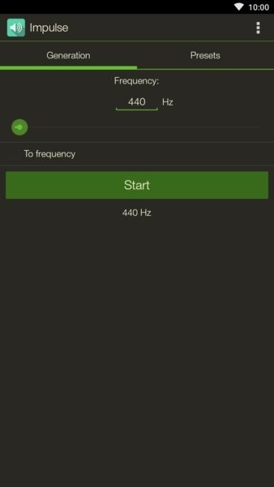
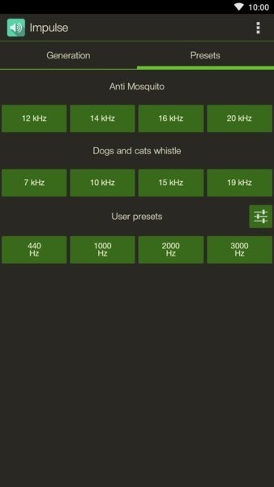

Impulse 评测：当一款信号 App 选择做减法
手机上的信号发生器不少，但走"极简纯音"路线的不多。Impulse 用砍掉一切多余参数的思路，把一件事做到了顺手。
手机上的信号发生器类应用，其实一直处一个尴尬的位置——做得像专业仪器的那种，按钮堆得满满当当，看一眼就劝退；做得太随意的，音质跟闹钟铃声没区别。Impulse 走了一条挺特别的路子：它几乎把所有能砍的都砍了，只留下"发出一个干净的正弦波"这一件事，然后把这件事做到了随身能掏出来用的程度。
先说这个类目本身。如果把手机信号 App 按功能密度排个座次，一端是模拟专业函数信号发生器的"重型选手"——波形类型全、扫频模式多、参数可调几十项，UI 抄的是台架子机；另一端是"玩具级"的纯音工具——只有一个频率滑块，音量锁死，扫快了直接炸音。Impulse 大概落在中间偏极简的位置——这从它官网上的设计倾向就能看出来——它既不模仿专业仪器，也不敷衍了事，就是老老实实地发纯音。

它做得比别家好的两三件事
预设系统，简单到刚好够用
很多同类 App 做预设的思路是"多就是好"——几十种预设分组、按场景分类的按钮组、还能云同步备份。Impulse 不搞这套。它只有一组 User presets，四个按钮，默认值是 440 / 1000 / 2000 / 3000 Hz，覆盖了中高频的几个关键参考点。
好的地方不在于少，而在于改起来没负担。右上角一个编辑图标，点进去就能改每个按钮的频率值，改完自动保存。如果你是吉他手，把四个按钮改成最常用的调音频率就行——82 Hz（E2）、220 Hz（A3）、392 Hz（G4）、659 Hz（E5），下次调音直接点一下就响。
对比之下，有些 App 改预设要进三级菜单，还要选分组还要确认保存，改个频率比调个闹钟还麻烦。Impulse 的预设系统不追求功能多，追求的是"改完能记住位置"——四个按钮排成一排，用两周你就能盲点。
不暴露参数反而是优点
扫频速度、时间跨度、扫频方向——这些参数在专业设备里是必须的，但在手机场景下绝大多数人不知道有什么用。Impulse 的做法是：不给你选项。扫频从低频到高频走一遍，默认速度大约 30 到 60 秒，不快不慢，刚好能听清每个频段的声音。
一开始我觉得这是个缺点——连个时间跨度都不能调，万一我想快点扫或者慢点听呢？实际用了一段时间发现，真需要不同节奏的时候，分段扫就好。把 20 Hz 到 20 kHz 拆成 5 到 6 个小区间，每个区间单独扫一遍，每个区间之间还能停下来记笔记。分段扫反而比一口气扫完更容易发现问题频段——这不是 Impulse 的设计，但它的极简逼你用了一个更聪明的工作方式。更多这类使用技巧可以翻一下Impulse文档。
纯粹的参考音体验
调音是 Impulse 最舒服的场景，下载装好之后打开就是 440 Hz。
很多人手机里装着调音器 App，但调音器是"你弹我来识别"的逻辑——你弹吉他，它告诉你偏高还是偏低。这个体验很被动，而且依赖麦克风识别精度，嘈杂环境下经常识别不准。
Impulse 反过来：它发参考音，你自己听。打开就是 440 Hz 纯音，点 Start 就响，把手机靠近吉他音孔，用手机外放或者插着耳机听，直到吉他弦发出的音和 440 Hz 完全对齐——拍频消失的那一瞬间就是调准了。
这个过程其实在帮你练耳朵。依赖调音器 App 的好处是快，但长期用你听不到自己的乐器发出来的音和标准音之间那点微妙的偏差。Impulse 不给你任何反馈，它只负责发出一个稳定的参考点，剩下的全靠你自己的耳朵去判断。很多乐手两种都装着用：Impulse 练听力，调音器 App 调精确音高。

它为这些优点付出了什么代价
极简不是没有代价的，Impulse 的取舍相当直接——砍掉的那些功能，你真需要的时候就没处找。
首先，只有正弦波。专业信号发生器能出方波、三角波、锯齿波，不同波形适合不同测试场景。方波富含奇次谐波，常用于数字电路测试；锯齿波的全谐波适合扫频分析。Impulse 一概没有，它只能发纯音。如果你的测试需要特定波形，Impulse 帮不上忙。
其次，输出幅度不精确。专业设备允许你设定精确的输出电压，还能匹配 50 Ω 或 75 Ω 等特定负载阻抗。Impulse 的输出由媒体音量控制——不同手机、不同音量档位的实际输出相差很大，手机耳机口的输出阻抗也不是规范值。这意味着你不能用 Impulse 做需要精确幅度的测试，只能做定性判断：有没有声、哪个频段衰减、乐器调没调准。
最后，没有调制功能。调幅、调频、脉冲调制——这些在专业设备里是标配，Impulse 一个都没有。它输出的就是单一频率的连续正弦波，简单到不能再简单。
还有一点值得提：Impulse 也没有时间跨度的手动设置，前面说过这倒逼你用分段扫的方式工作，好处是更细心，代价是效率——一口气扫完要 30 秒，分段扫可能要两三分钟，看你急不急。
选购结论
如果你的需求是：随身带一个能发干净参考音的工具、给乐器调音、做简单的频响测试比如听听耳机哪个频段有问题、偶尔扫一下频看看音箱响应——那 Impulse 非常适合你。它把这些场景需要的功能做到了顺手，没有多余，没有干扰。
但如果你需要精确的幅度控制、特定波形输出、调制能力，或者你正在做严肃的电子工程测试——别碰手机 App，直接去租一台正经的信号发生器。Impulse 从一开始就没打算做便宜版的专业仪器，它的定位就是"随时能掏出来响一下"的随身工具。
我自己现在随身带着 Impulse 的场景其实很简单：偶尔朋友带了新耳机想听听频响、吉他放久了需要快速对个音、或者就是想听听某个频段在安静的房间里是什么感觉。在这些时刻，Impulse 的极简反而是它最大的优势——打开、点一下、完事，没有任何学习成本。
这套参考频率的资料在GitHub、Gitee 和 GitCode 三个仓库都能找到，按你习惯的访问速度选一个就行，内容是同步的。